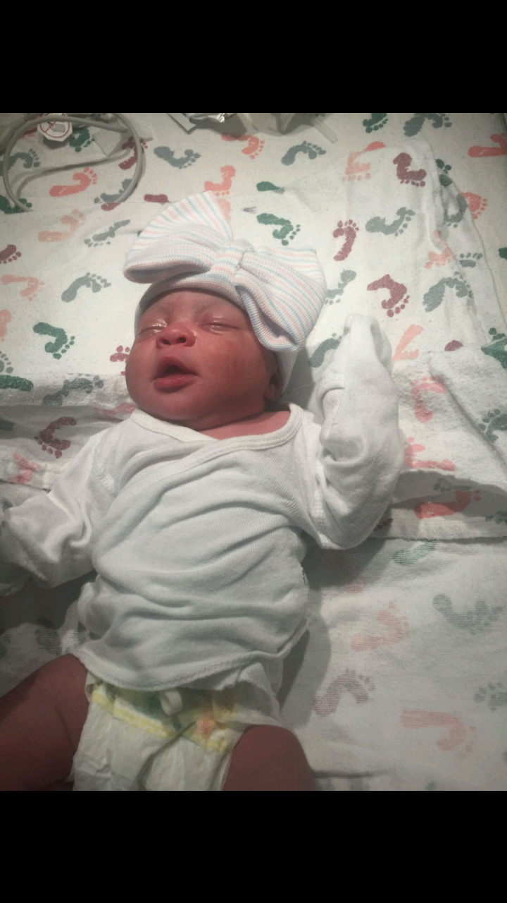

Children grow up so fast one blink and you could miss everything!
It seems like just yesterday I had my daughter. I can still remember everything from that day, It was around 6:00am in the morning when my water broke. I was so excited that I didnt even notice the pain from my contractions. My boyfriend rushed me to the hospital and six hours later she was born. She was absolutely the most perfect little human being I had ever laid eyes on.
